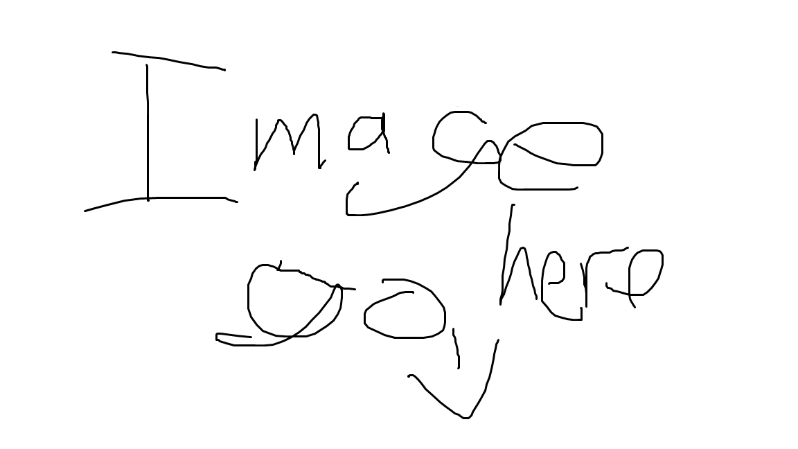

How its Made
Cows are milked using vacuum cups which are attached to the cow's teats. The milk is sent through stainless steel pipes to large refrigerated vats, then stored at 5°C or less. Within 48 hours, milk is taken in tankers to a milk factory where it's pasteurised and homogenised.
